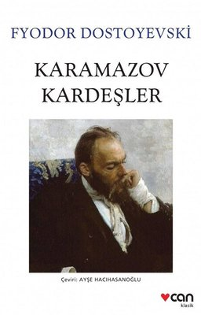

KitapKurdum |
Ana Sayfa | | Sıkça Okunanlar | | Sıkça Dinlenenler | | Yakın Zamanda Çıkacaklar | Kayıt Ol | Giriş Yap |
|---|
|  |
Fyodor Pavloviç Karamazov toprak sahibi, zengin bir adamın kızıyla evlenir. Fyodor, kendisinden her türlü kötülük beklenen, serseri yaradılışlı bir kişidir. Bu ilk karısından Dimitri adında bir oğlu olur, kadının tüm mallarını kendi üstüne alır. Kendisine çok kötü davranılan kadıncağız her şeyi bırakıp gider. Yokluk ve acılar içinde ölür. İkinci karısından İvan ve Aleksi (Ayoşa) adında iki oğlu olur. ikinci karısı adamın zulümlerine dayanamaz, ölür. Fyodor Karamazov kasabadaki saf bir kızı iğfal eder. Kız hamile kalır. Doğum yaparken ölür; ondan da Smerdyakov adında dördüncü oğlu olur. ilk üç çocuk akrabaları tarafından büyütülür. Şimdi Dimitri 27, İvan 24, Aleksi (Alyoşa) ise 20 yaşındadır. Dimitri subay olur ama bunu sürdüremez. İvan üniversiteyi okurken para kazanmak için gazete ve dergilere yazılar yazan biridir. Aleksi ise papaz olur. Son kardeş Smerdyakov ise babasına uşaklık etmektedir. Dimitri, bir albayın kızı olan Katerina’ya (Katya) aşık olur. Babasının ordudan zimmetine geçirdiği parayı vermek karşılığında kıza sahip olur. Katya daha sonra Dimitri’nin kendisine aşık olduğuna ikna olur ve nişanlanırlar. Bu sıralarda Dimitri Gruşenka adında bir kıza tutulur. Katya, Dimitri’ ye Moskova’daki kız kardeşine göndermesi için üç bin ruble verir. Ama Dimitri bu parayı Gruşenka’yla harcar. Dimitri borcu olduğu için Katya’dan ayrılamaz; ama gönlü Gruşenka’dadır. İşin daha kötüsü Gruşenka’ya Dimitri’nin babası Fyodor Karamazov da aşıktır. Bu arada Dimitri’nin nişanlısı Katya’ya ivan da aşık olur, aynı zamanda Katya’dan da ilgi görür. Dimitri bu durumdan rahatsız olmaz; çünkü Katya’dan ayrılmak istemektedir. Katya ise kendini feda etmek pahasına Dimitri’yi ıslah etmek istemektedir. Dimitri, Gruşenka’yı görmek için evine gider ama onu evde bulamaz. Onun, babası Fyador’un yanına gittiğini düşünür, çılgına döner. Babasını öldürmeyi kafasına koyar ve babasının evine gider. Babası da Gruşenka da yoktur evde. Dimitri bahçıvanla kavga eder, onu yaralar, üstü başı kan olur. Aslında Gruşenka eski bir aşığıyla gitmiştir.Dimitri peşlerinden gider ve onları bir handa eğlenirken bulur. Dimitri, Gruşenko’nun yanındaki adama biraz para verir. Adam basit biri olduğu için kızı bırakır gider. Dimitri’ye Gruşenka sadece kendisini sevdiğini söyler, çılgınca eğlenirler. Güya parası olmayan Dimitri herkese içki ısmarlar. Bu sırada polis gelir, Dimitri’yi babasının parasını çalıp onu öldürmek suçundan tutuklar. Oysa babasını evin uşağı Smerdyakov öldürmüştür. Smerdyakov bu olayı İvan’a anlatır.ivanbunu mahkemede söyleyeceğini söyleyince adam intihar eder.Ama ivan mahkemede bunu anlatmaz. Çünkü Dimitri hapse girince Katya kendisine kalacaktır. Katya’da “Dimitri’nin, babasını öldürmek istediğini” yazdığı bir mektup vardır. Katya cinayeti Dimitri’nin işlediğini sanarak mektubu mahkemeye sunar. Dimitri 20 yıl sürgün cezası alır. Ana Sayfa |